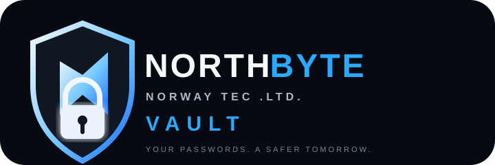

File-backed accounts
Local account records are kept in users.json. Your local application does not require SQLite.

NorthByte Vault is a lightweight, file-backed password manager designed
for local use. No SQLite, no cloud database — your account data and
encrypted .nbv vault files stay on your machine.
Local account records are kept in users.json. Your local application does not require SQLite.
Each account can have an encrypted .nbv vault file for persistent password storage.
Bring over a standard Bitwarden JSON export and keep your credentials in the NorthByte Vault workflow.
The application is intended for local use on your own machine rather than as a hosted cloud service.
Replace the download target below with the direct GitHub Release or repository asset URL you publish.
Extract the downloaded ZIP first, then open PowerShell or Command Prompt inside the project folder.
After extracting the ZIP, change into the application directory:
cd northbyte-vault-file-editionRecommended on Windows:
start.batOr start it directly with Python:
python server.pyThen open the local address shown by the server, normally:
http://127.0.0.1:8080cd northbyte-vault-file-edition
python server.py
# then open:
http://127.0.0.1:8080Persistent local files instead of a database server.
Logging out ends the active session while your local vault files remain.
Import a standard Bitwarden JSON export into the local vault workflow.
Security notice: NorthByte Vault is a local application and should be independently reviewed before being used for high-value production secrets. Keep backups of your encrypted vault files and protect the machine where the application runs.